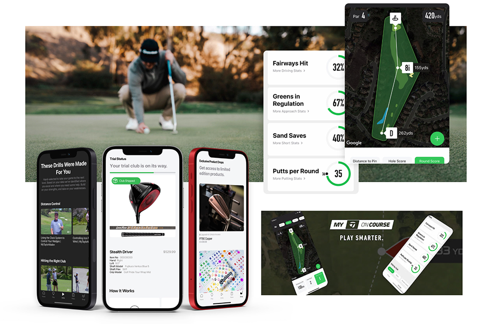
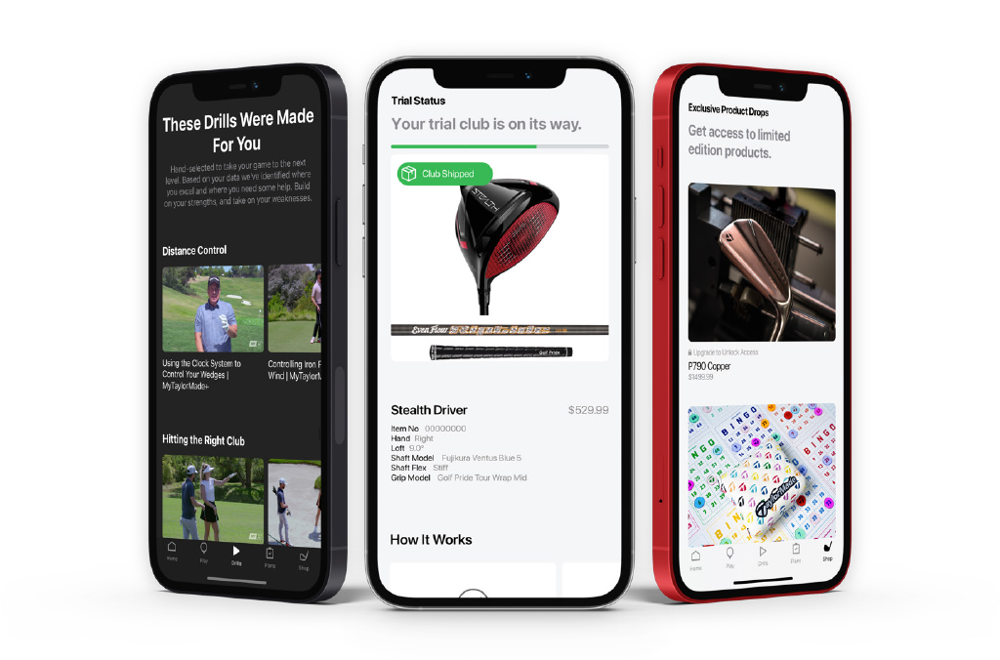
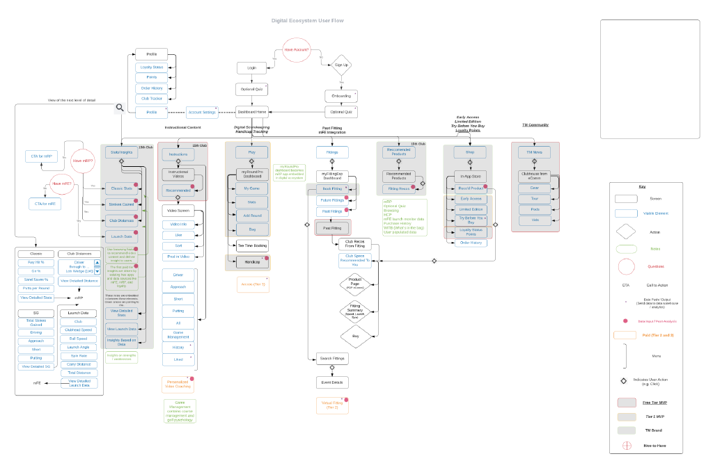
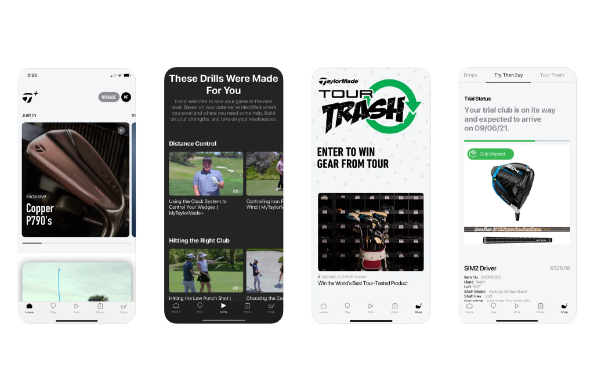
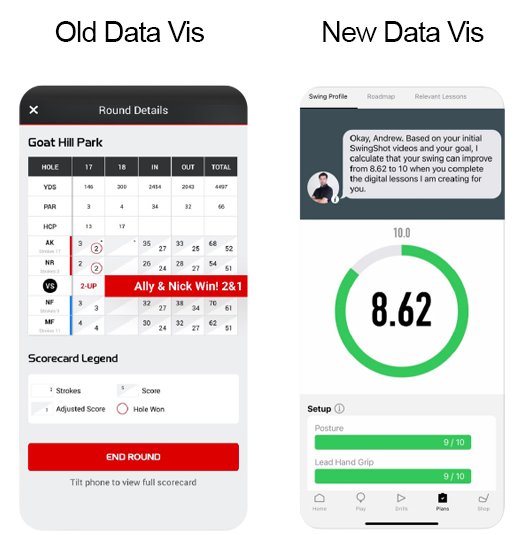

My TaylorMade+
TaylorMade's app was a basic score tracker. I led its reimagining as a digital clubhouse, pairing player data with coaching, insights and gear recommendations across iOS, Android and Apple Watch.
A score tracker nobody opened between rounds
The original problem TaylorMade wanted to solve was to revamp the myRoundPro golf performance tracking app. The global pandemic had triggered a wave of new golfers, but the client was seeing increased attrition. Their internal hypothesis was that the core data simply wasn't providing enough value to users.
Users didn't see enough value in the app, and viewed it as a data capture platform rather than something that would help improve their game. There was no reason to open it between rounds.
The outcome we aligned on: move from complex data sets to simple visuals with a clear answer, and add a raft of new features, push notifications with relevant performance insights, drills from the pros, gear recommendations, to build stickiness and, ultimately, a community around the app.

Better data alone wouldn't solve it
The discovery stage I led began with a series of workshops and stakeholder interviews focused on understanding what the client wanted to achieve with their app, and what they felt wasn't currently working with the solution they had in place.
From these initial processes it was clear that better data would not solve their problem single-handedly. The app needed a reason to exist between rounds, not just a more detailed scorecard.

One squad, constant communication
Maintaining constant communication with the design squad, our engineering and data science teams, and Envoy, the partner agency, was key. To make sure this was always done effectively, I adopted the approach of making sure someone from each team was present at different planning meetings, allowing the teams to be aware and raise issues early.
I created an extensive set of wireframes and built out an all-new design system centred around the brand Vi, with a heavy focus on design tokens, along with guidelines for internal teams to replicate the visual style of posts and features within the app.


A fresh name and identity for launch
To help launch the new app, a new name and visual identity was created to give the product a fresh start. I led the visual identity work with an internal squad to create a guideline for marketing materials, and compiled a matrix of ideas to combine business goals with the needs of key personas.
Downloads doubled in year one, and sales rose 18.6%.